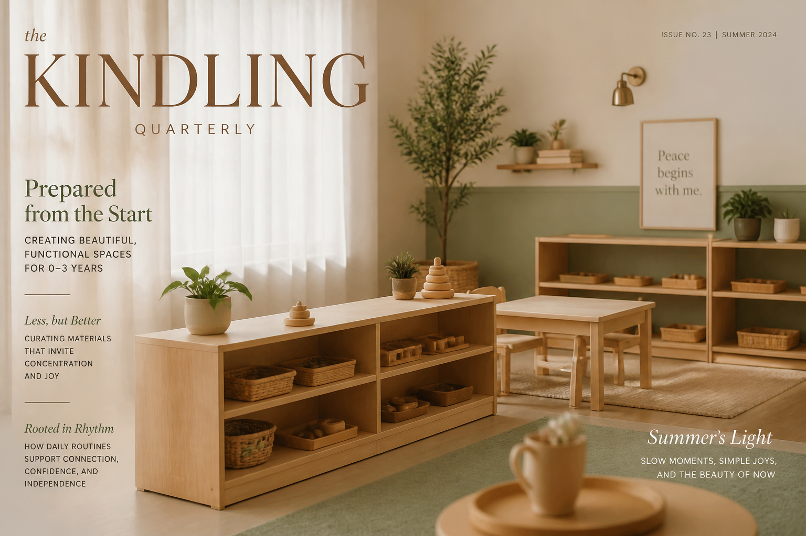
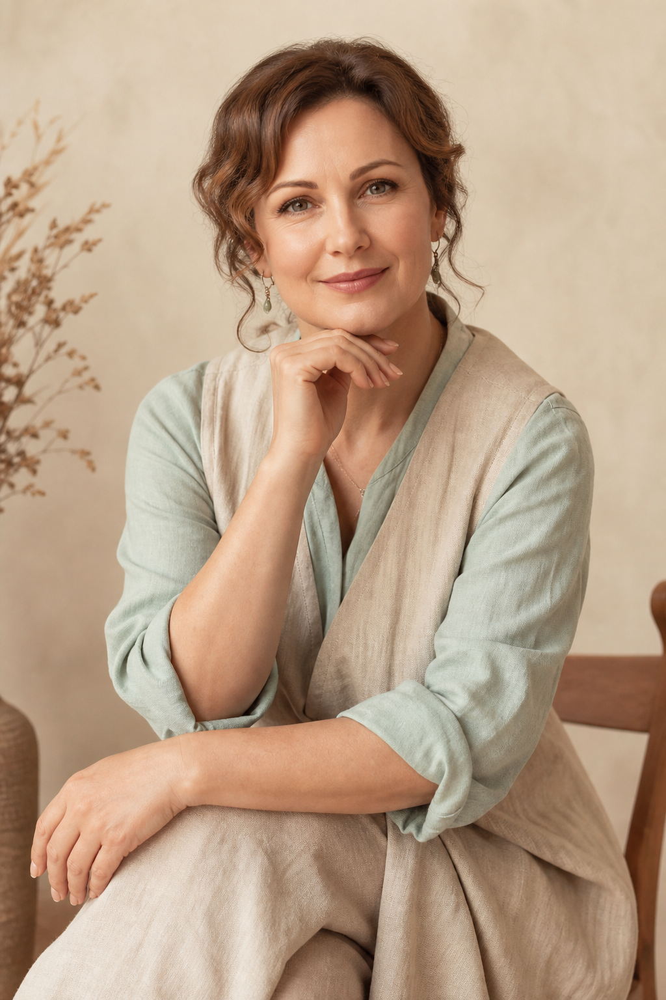
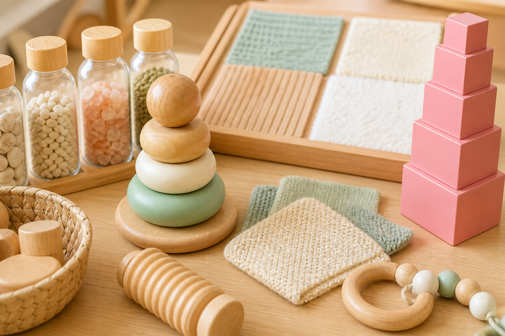
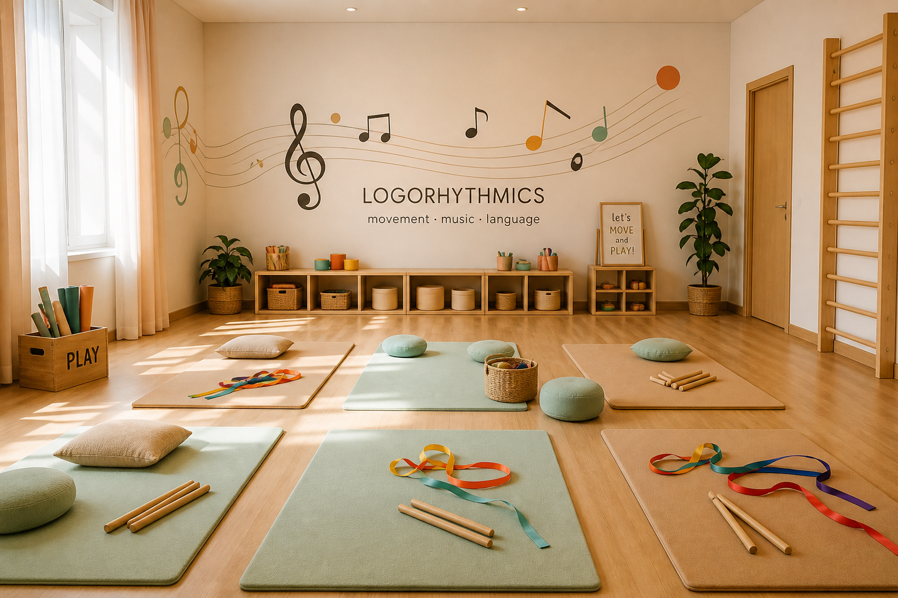
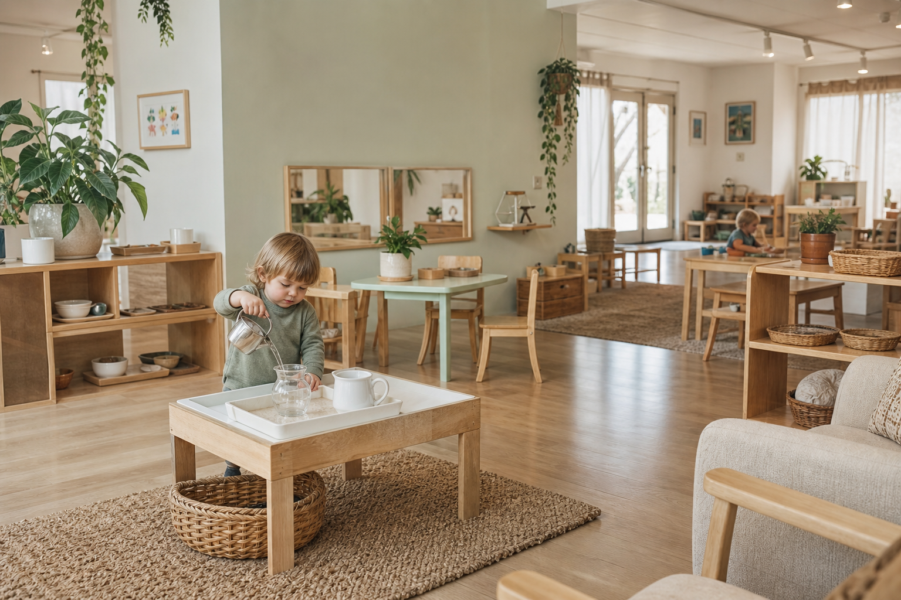
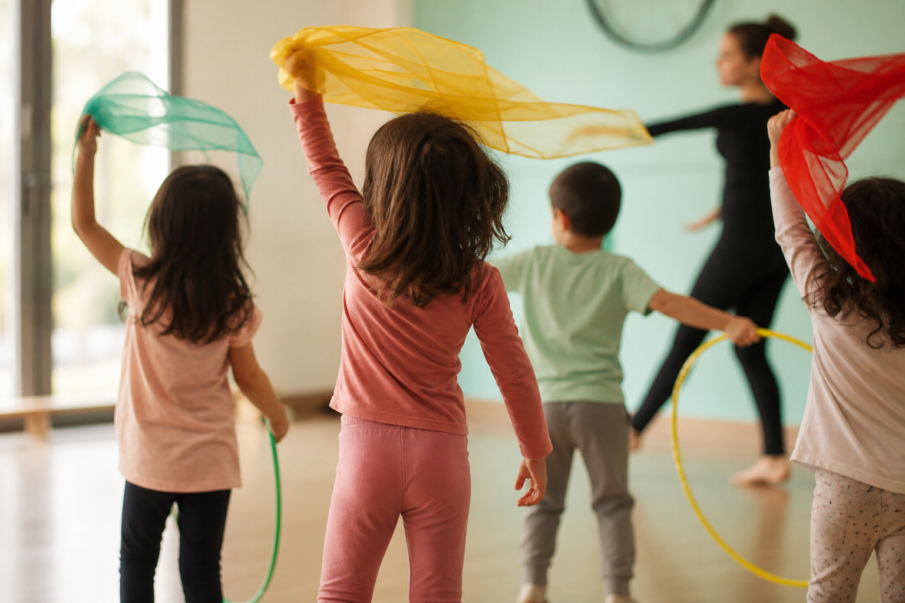
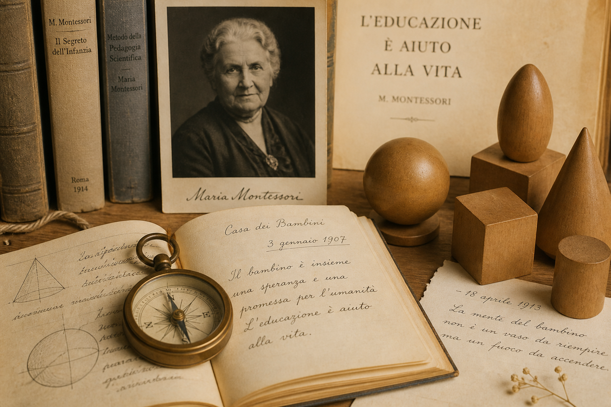
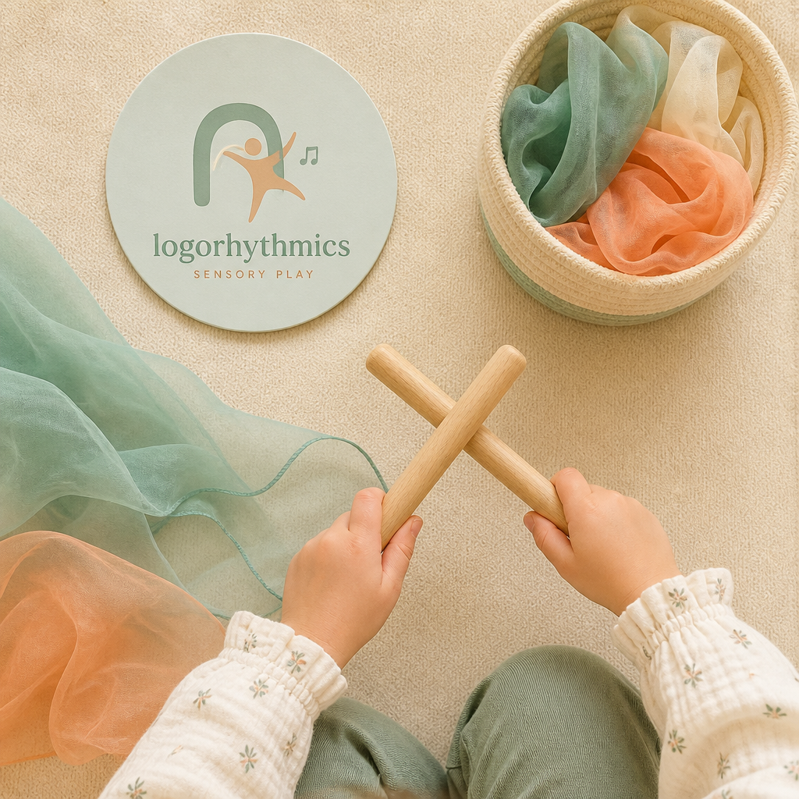
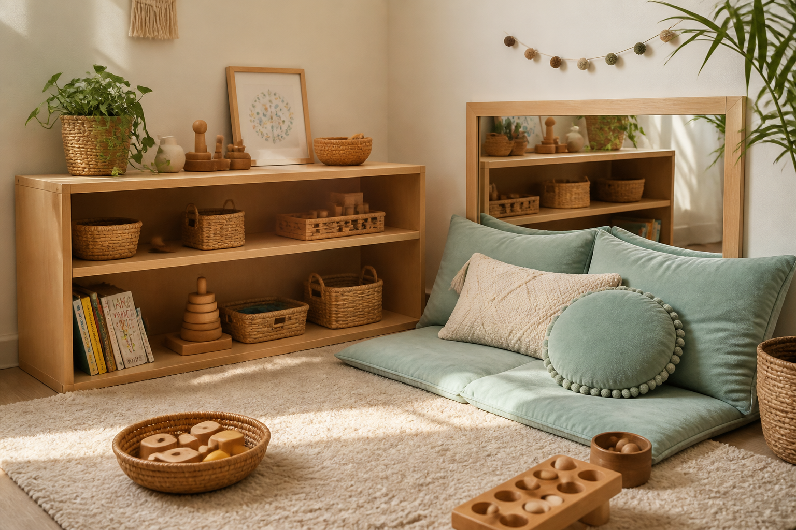

Монтессори «Малыш и мама»
Мягкая адаптация к группе, сенсорное развитие, практическая жизнь с участием мамы.
Ребёнок получит: уверенность, моторику, первые навыки самостоятельности.
4 500 ₽/мес
Коллекционное издание · Выпуск I
Путь от учителя начальных классов к педагогу Монтессори и логоритмики. Пространство, где ребёнок растёт в собственном ритме — рядом с мамой.


Ирина Сергеевна Кичигина · основатель студий «Я и МАМА»
«Каждый ребёнок — отдельная вселенная. Моя задача — помочь ему раскрыться»
Меня зовут Ирина Сергеевна Кичигина. Я прошла путь от учителя начальных классов до сертифицированного педагога Монтессори для детей от 0 до 3 лет и специалиста по логоритмике. За 8 лет работы с детьми я убедилась: развитие начинается не с давления, а с доверия, подготовленной среды и бережного сопровождения.
Студии «Я и МАМА» — это место, где мама остаётся рядом, а ребёнок учится самостоятельности. Два направления — Монтессори и логоритмика — дополняют друг друга и готовят малыша к уверенной жизни и школе.
Частная практика: начальные классы, раннее развитие
Педагог Монтессори 0–3 · Логоритмика · Логопедия
Выберите направление и погрузитесь в атмосферу занятий

Самостоятельность, подготовленная среда, смешанный возраст. Занятия 2 раза в неделю.
Войти в студию
Речь, мышление, координация через движение и музыку. Готовность к школе в игровой форме.
Войти в студиюМягкая адаптация к группе, сенсорное развитие, практическая жизнь с участием мамы.
Ребёнок получит: уверенность, моторику, первые навыки самостоятельности.
Смешанный возраст, свобода выбора, материалы для математики и языка.
Ребёнок получит: концентрацию, социальные навыки, любовь к познанию.
Ритм, речь, координация через игру. Работа с мелкой и крупной моторикой.
Ребёнок получит: чёткую речь, ритмическое чувство, уверенность в движении.
Подготовка к школе: чтение, письмо, счёт через движение. Диагностика готовности.
Ребёнок получит: школьную зрелость, усидчивость, пространственное мышление.
Первое занятие — бесплатная диагностика. Стоимость уточняется при записи.
Профессиональный процесс от первой встречи до регулярной обратной связи с родителями.
Бесплатная встреча: наблюдение, беседа с мамой, определение потребностей ребёнка.
Подбор программы, материалов и темпа. Учитываем возраст, темперамент, цели семьи.
Регулярные занятия в малых группах. Без крика и принуждения — через уважение и среду.
После каждого блока — рекомендации для дома, отчёт о прогрессе, корректировка плана.
Снизим тревожность первого визита — посмотрите, где будет ваш ребёнок

Тёплый свет, натуральные материалы, порядок на уровне глаз ребёнка. Здесь нет шумных игрушек — только пособия, которые развивают концентрацию и самостоятельность.

Просторный зал, мягкие коврики, музыкальные инструменты и пространство для движения. Атмосфера радости и свободы — ребёнок учится через игру.
Я не использую единый шаблон для всех. На диагностике наблюдаю, как ребёнок взаимодействует с материалами, как реагирует на новизну, какой у него темп. Это определяет стартовую точку и динамику занятий.
Начинаем с индивидуальных мини-занятий, постепенно вводим в группу по 5 минут.
Больше телесных активностей, короткие блоки, чёткий ритуал начала и конца занятия.
Комбинируем Монтессори-материалы для языка с элементами логоритмики.

«Дочка пришла в 1.5 года — боялась всего нового. Через месяц сама бежит к полкам с материалами. Ирина Сергеевна — невероятно тактичный педагог.»
«Сын готовился к школе через логоритмику. Речь стала чётче, научился читать слоги. Главное — ему нравится ходить, не заставляем.»
«Ценю обратную связь после каждого месяца. Всегда знаю, над чем работаем и что делать дома. Это не просто занятия — это партнёрство.»
Замените ID организации в настройках виджетов на актуальные из вашего профиля Яндекс.Карт и 2ГИС.

Неразборчивая речь, плохая координация, трудности с ритмом — когда стоит обратиться к специалисту.
Читать статью
Как организовать пространство для малыша без дорогих покупок — практичный список от педагога.
Читать статьюРазбираем популярные заблуждения о методе и объясняем, что работает для детей 0–3 лет.
Читать статьюМонтессори для малышей — 45 минут, для детей постарше — 60 минут. Логоритмика — от 45 до 60 минут в зависимости от возраста. Мы учитываем естественный ритм внимания ребёнка.
Да. Первое посещение — бесплатная диагностика с элементами занятия. Вы увидите студию, познакомитесь с педагогом и получите рекомендации.
Сменную обувь для вас и ребёнка, сменную одежду для малыша, бутылочку воды. Всё остальное — в студии.
Это нормально. Мы не торопим и не заставляем. Мама может обнять, мы подождём. Постепенно ребёнок привыкает к пространству — обычно за 2–3 занятия.
г. Ваш город, ул. Примерная, 10
Студии «Я и МАМА»
Вторник, Пятница: 9:00 — 18:00
Суббота: 10:00 — 14:00